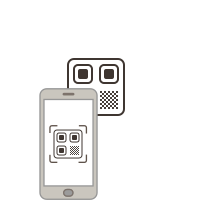

Dikte Kayıt Sistemi
Doktor Ses Kayıt Uygulaması
--

Telefon Bekleniyor
QR kodunu doktor telefonundan okutun.
QR Kod Numarası--------Bu kod ile telefondan bağlanın.
0 cihaz
Telefon
Bekleniyor...
CANLI SES KAYDI
00:0000:00
SES KAYITLARI
Gelen Ses Kayıtları
Doktorlardan gelen kayıtları yönetin
Tarih seç
#DOKTORCİHAZTARİH - SAATSÜRESES DALGASI / İŞLEMLER
Henüz kayıt yok.
DOKTORLAR
Bağlı Doktorlar
AYARLAR
Sistem Ayarları
Heartbeat5 saniyede bir bağlantı kontrolü
Bağlantı toleransı45 saniye
Kayıt aktarımıOtomatik ve güvenli
Sesli Doktor Kayıt Ekranı
● Güvenli
▣
Bağlantı kontrol ediliyor…QR oturumu doğrulanıyor.
QR Oturum------
İLK BAĞLANTI
Hoş Geldiniz
Ses kayıtlarının size ait olduğunu ayırabilmemiz için adınızı ve soyadınızı yazın.
SES KAYDI
Doktor
Telefon✓ Ses kaydı bilgisayara gönderildi
Hazır
Kayda başlamak için mikrofona dokunun.
00:00
Mikrofona dokunun
Kayıt yapılıyor...00:00
Kayıtlarım
0 kayıtHenüz kayıt yok.
🛡 Ses kaydı aktif QR oturumu ve bu cihaz bağlantısı ile ayrı tutulur.
QR Kodunu OkutunBilgisayardaki QR koduna doğrultun.
Kamera hazırlanıyor…